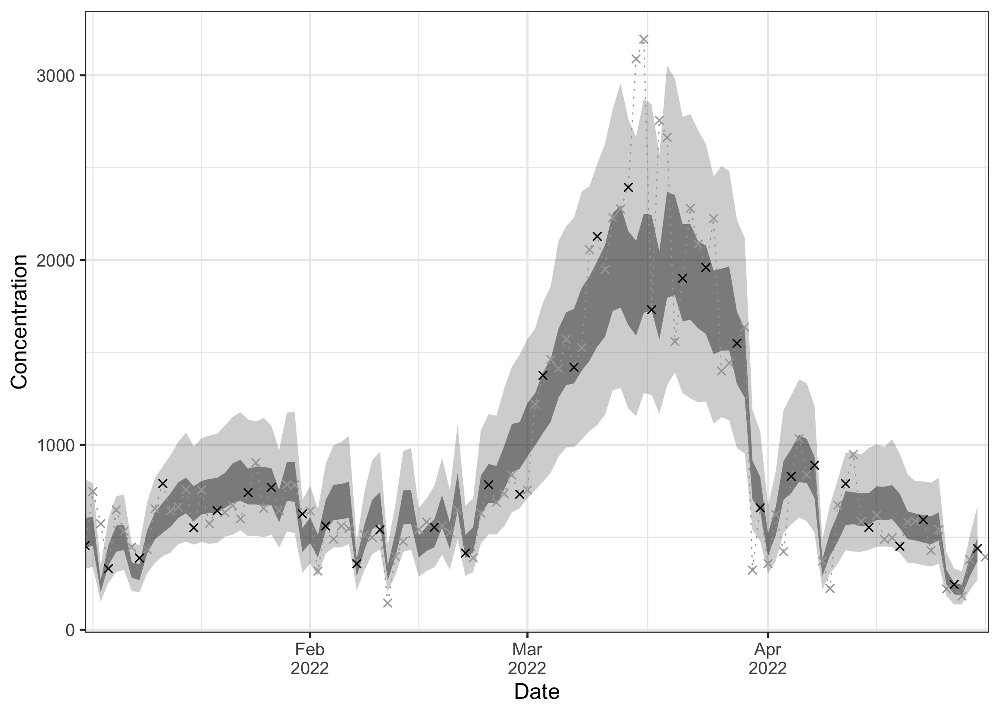
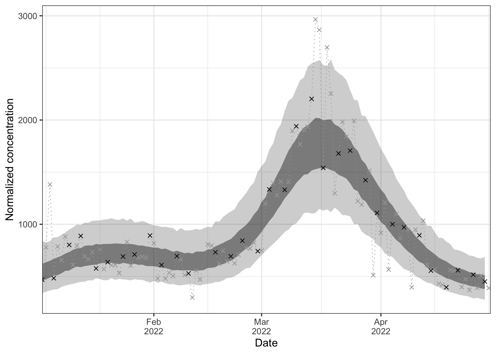
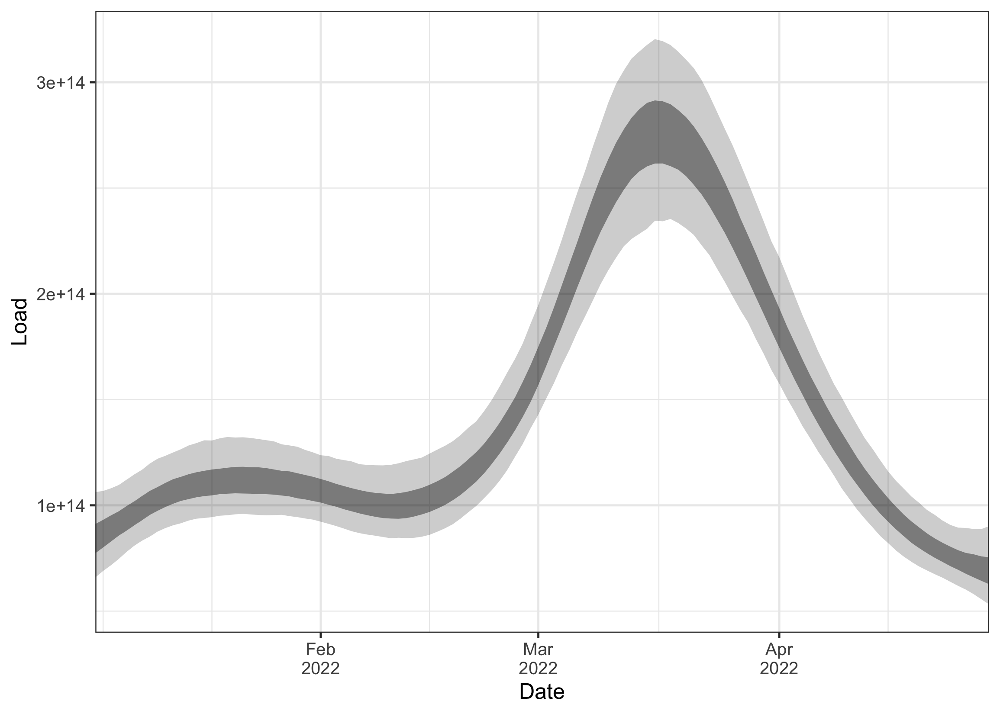

About
The EpiSewer R package provides a Bayesian generative model to estimate effective reproduction numbers and other epidemiological parameters from concentration measurements at a wastewater treatment plant (or other sampling site) over time. This allows to track the transmission dynamics of a pathogen in the associated catchment population. The EpiSewer model is tailored to the specifics of wastewater concentration measurements, offers comprehensive uncertainty quantification via MCMC sampling in stan, and provides easily configurable modeling components.

Model highlights
Measurements
⭐ Non-daily / missing measurements
⭐ Multiple measurements (replicates) per sample
⭐ Multi-day composite samples
⭐ Accurate dPCR noise model
⭐ Limit of detection (LOD) model
Sampling
⭐ Sample batch effects (e.g. weekday or age-of-sample effects)
Sewer
⭐ Flow normalization
⭐ Sewer residence time distributions
Shedding
⭐ Incubation period and shedding load distributions
⭐ Individual-level shedding load variation
Infections
⭐ Stochastic infection model with overdispersion
⭐ Flexible smoothing (random walk, exponential smoothing, splines)
⭐ Transmission indicators: , growth rate, doubling time, and more
Forecast
⭐ Probabilistic forecasts of , infections, concentrations and more
Installing the package
The development version of EpiSewer can be installed from GitHub as shown below. Please note that the package is still highly experimental and may be subject to breaking changes.
remotes::install_github("adrian-lison/EpiSewer", dependencies = TRUE)EpiSewer also requires CmdStan to be installed on your system. This can be done using the install_cmdstan() function from cmdstanr. If you experience any problems installing CmdStan, see the cmdstanr vignette for help.
cmdstanr::check_cmdstan_toolchain()
cmdstanr::install_cmdstan(cores = 2) # use more cores to speed upThe stan models used by EpiSewer need to be compiled for your device. This is only necessary once - after installing or updating the package - and can be done using the sewer_compile() function.
EpiSewer::sewer_compile()If the models are not successfully compiled, please ensure that cmdstan is properly set up and try updating it to a newer version using cmdstanr::install_cmdstan(). If the problem persists, please run EpiSewer::sewer_compile(verbose = TRUE) and post the output in a new issue on GitHub, along with your cmdstanr::cmdstan_version().
Introduction
This is a quick introduction to using the EpiSewer package. To learn more about modeling with EpiSewer, see the model specification and detailed example vignettes on the package website.
Data
Data requirements
The below example of wastewater data is from Zurich, Switzerland. Data are provided by EAWAG (Swiss Federal Institute of Aquatic Science and Technology) to the public domain (CC BY 4.0 license).
data_zurich <- SARS_CoV_2_Zurich
names(data_zurich)
#> [1] "measurements" "flows" "cases" "units"-
measurements:EpiSewerrequires a time series of concentration measurements. Measurements should ideally be in gc/mL (gc = gene copies). -
flows: Data about the daily wastewater volume flowing through the sampling site (should be in mL/day). Flow data is highly recommended, but not strictly necessary (see documentation offlows_assume()). -
cases: Data about confirmed cases in the catchment area. This is optional but can help informing some of our prior assumptions.
Measurements
The measurements data contains daily viral concentration measurements (in gc/mL) for the SARS-CoV-2 N1 gene at the wastewater treatment plant in Zurich. Some days have missing measurements, but this is no problem: EpiSewer naturally accounts for missing values during estimation.
data_zurich$measurements
#> date concentration
#> 1: 2022-01-01 NA
#> 2: 2022-01-02 NA
#> 3: 2022-01-03 455.7580
#> 4: 2022-01-04 747.8792
#> 5: 2022-01-05 573.7020
#> ---
#> 116: 2022-04-26 182.3664
#> 117: 2022-04-27 379.2421
#> 118: 2022-04-28 439.7427
#> 119: 2022-04-29 394.0033
#> 120: 2022-04-30 293.1242To show the handling of missing data more clearly, we make our data artificially sparse by keeping only measurements that were made on Mondays and Thursdays. This means we will only have two measurements per week.
measurements_sparse <- data_zurich$measurements[,weekday := weekdays(data_zurich$measurements$date)][weekday %in% c("Monday","Thursday"),]
head(measurements_sparse, 10)
#> date concentration weekday
#> 1: 2022-01-03 455.7580 Monday
#> 2: 2022-01-06 330.7298 Thursday
#> 3: 2022-01-10 387.6885 Monday
#> 4: 2022-01-13 791.1111 Thursday
#> 5: 2022-01-17 551.7701 Monday
#> 6: 2022-01-20 643.9910 Thursday
#> 7: 2022-01-24 741.9150 Monday
#> 8: 2022-01-27 770.1810 Thursday
#> 9: 2022-01-31 627.1725 Monday
#> 10: 2022-02-03 561.2913 ThursdayFlows
The flows data tracks the daily flow (in mL/day) at the treatment plant in Zurich. The flow data will be used to normalize the concentration measurements. This helps to account for environmental factors such as rainfall. It is important that the flow uses the same volume unit as the concentration (mL here in both cases).
data_zurich$flows
#> date flow
#> 1: 2022-01-01 3.41163e+11
#> 2: 2022-01-02 3.41163e+11
#> 3: 2022-01-03 1.58972e+11
#> 4: 2022-01-04 1.60849e+11
#> 5: 2022-01-05 3.72301e+11
#> ---
#> 116: 2022-04-26 3.30659e+11
#> 117: 2022-04-27 2.06046e+11
#> 118: 2022-04-28 1.58373e+11
#> 119: 2022-04-29 1.52156e+11
#> 120: 2022-04-30 2.08685e+11❗ Note: It’s not a problem if you only have flow data on dates with measurements. However, for each measured date, there must also be a flow value. If flow information is missing for measured dates, please make sure to impute it using a suitable method before passing it to EpiSewer (or drop those dates).
Cases
Finally, if we have case data available, we can also pass this to EpiSewer. This is then used to calibrate the model so that the estimated number of infections approximately matches the observed number of cases.
data_zurich$cases
#> date cases
#> 1: 2022-01-01 NA
#> 2: 2022-01-02 NA
#> 3: 2022-01-03 1519.5313
#> 4: 2022-01-04 1727.3722
#> 5: 2022-01-05 1638.5321
#> ---
#> 116: 2022-04-26 211.9338
#> 117: 2022-04-27 214.9822
#> 118: 2022-04-28 206.2498
#> 119: 2022-04-29 151.9567
#> 120: 2022-04-30 134.8545If you don’t have case data: don’t worry! In general, the assumed shedding load per case does not have a large effect on the effective reproduction number, and EpiSewer will use a robust default. You just have to keep in mind that the absolute number of infections estimated by EpiSewer should not be interpreted as true incidence or prevalence.
Gather the data
We combine the measurements data and flow data using the helper function sewer_data(). We here use our artificially sparse measurements (only Mondays and Thursdays). For calibration purposes, we also supply the case data, as explained above.
ww_data <- sewer_data(
measurements = measurements_sparse,
flows = data_zurich$flows,
cases = data_zurich$cases # cases are optional
)Assumptions
In order to estimate the effective reproduction number from wastewater concentration measurements, we have to make a number of assumptions.
- Generation time distribution: Distribution of the time between a primary infection and its resulting secondary infections
- Shedding load distribution: Distribution of the load shed by an average individual over time. We also specify that our distribution is relative to the day of symptom onset.
- Incubation period distribution: Because our shedding load distribution is in days since symptom onset, we also need to make an assumption about the time between infection and symptom onset.
The generation time, shedding load and incubation period distribution are all disease-specific and are typically obtained from literature. EpiSewer requires these distributions to be discretized, and offers specific functions to obtain discretized versions of popular continuous probability distributions.
ww_assumptions <- sewer_assumptions(
generation_dist = get_discrete_gamma_shifted(gamma_mean = 3, gamma_sd = 2.4, maxX = 12),
shedding_dist = get_discrete_gamma(gamma_shape = 0.929639, gamma_scale = 7.241397, maxX = 30),
shedding_reference = "symptom_onset", # shedding load distribution is relative to symptom onset
incubation_dist = get_discrete_gamma(gamma_shape = 8.5, gamma_scale = 0.4, maxX = 10),
)üí° Sometimes, shedding load distributions are instead specified in days since infection. In that case, you can use shedding_reference = "infection" and don‚Äôt need to supply an incubation period distribution.
Estimation
Now that we have the data and necessary assumptions, we can use EpiSewer to estimate the effective reproduction number. We here use the default model and settings provided by EpiSewer. With the helper function set_fit_opts() we specify our sampling approach: we apply Hamiltonian MCMC sampling via stan, using 4 chains with 500 warmup and 500 sampling iterations each.
Stan regularly provides updates about the progress of the sampler. The overall runtime will depend on your hardware resources, the size of the data, the complexity of the model used, and how well the model actually fits the data. On a MacBook Pro (2 GHz Quad-Core Intel Core i5) the example below takes about 4 minutes to run.
options(mc.cores = 4) # allow stan to use 4 cores, i.e. one for each chain
ww_result <- EpiSewer(
data = ww_data,
assumptions = ww_assumptions,
fit_opts = set_fit_opts(sampler = sampler_stan_mcmc(
iter_warmup = 500, iter_sampling = 500, chains = 4, seed = 42
))
)üí° We are here using a shorthand version of the EpiSewer() function which uses all available default settings. To find out how the EpiSewer model can be customized, see the model specification and detailed example vignettes.
Plotting the results
Great, the sampling has completed! Now we can inspect the results of our model. Plots are a convenient way to get a quick overview.
Model fit
It is good practice to first assess how well the model actually fitted to the data. For this, we plot the observed concentration measurements against the ones predicted by the model. The inner and outer ribbons show the 50% and 95% credible intervals. The black dots show measurements that we have actually observed in our artificially sparse data set (only Mondays and Thursdays). The grey crosses show all the other measurements that were not available to the model. As we can see, the model still achieved a decent fit on these missing days.
plot_concentration(ww_result, measurements = data_zurich$measurements)
By default, the function plot_concentration() shows absolute concentrations, which strongly depend on the daily wastewater flow. Alternatively, we can plot the flow-normalized concentration by setting normalized = TRUE. This will show the hypothetical concentration if the flow was at its median value. For this option, we need to provide the flow data as well (see below).
plot_concentration(ww_result, measurements = data_zurich$measurements, flows = data_zurich$flows, normalized = TRUE) As can be seen, the normalization removes the noise due to the daily variation of flow. The remaining uncertainty is due to the measurement noise and other sources of variation.
Time-varying effective reproduction number
Since the model fit looked decent at first glance, we now inspect our main parameter of interest, the effective reproduction number over time. Again, the ribbons show the 50% and 95% credible intervals. We see that even with only two measurements per week, we get a fairly clear signal for R being above or below the critical threshold of 1.
plot_R(ww_result)
Note that the estimates for R go back further into the past than our observations. This is due to the delay from infection to shedding, i.e. concentration measurements observed today are mostly a signal of infections in the past. This is also why the R estimates close to the present are strongly uncertain. The measurements observed until the present provide only a delayed signal about transmission dynamics, so the most recent R estimates are informed by only little data.
Growth report
We can also display a growth report which shows the probability that infections have been growing for a prolonged period of time. By default, EpiSewer selects the most recent date for which reliable estimates are possible as a reference.
plot_growth_report(ww_result) As the model was fitted at the end of the seasonal wave in Zurich, there is high posterior support that infections are currently not growing for a prolonged period of time.
As the model was fitted at the end of the seasonal wave in Zurich, there is high posterior support that infections are currently not growing for a prolonged period of time.
You can also display a growth report for other dates. Let’s for example have a look at the report for mid-February 2022. Here we can see that there is strong posterior support that infections have been growing for at least a week. At the same time, it seems rather unlikely that they have already been growing for 3 weeks or longer.
plot_growth_report(ww_result, date = "2022-02-19")
üí° EpiSewer also provides further indicators of transmission dynamics, see e.g.¬†plot_growth_rate() and plot_doubling_time(). These can however be more volatile and sometimes difficult to interpret.
Latent parameters
We can also inspect other internal parameters of the model. This may give us a better understanding of the model fit and may help to diagnose certain problems.
First, we plot the estimated load over time. This is the expected total load that arrived at the sampling side on a given day. We can see this is roughly on the order 1e14 to 3e14.
plot_load(ww_result) Next, we plot the estimated number of infections over time. The time series follows a very similar trend as the load. Compared to the load, the peak in infections seems to be a bit more spiked, and also a bit earlier. This is because infected individuals only begin shedding after their infection and then shed over a longer period of time (as defined by the incubation period and shedding load distribution). This makes the load a slightly delayed and blurred signal of the infections.
plot_infections(ww_result)Note that because we supplied case data, the estimated infections rougly match the case numbers (plotted in blue below). Nevertheless, the infections plot shown here should only be used for diagnostic purposes, for example to ensure that the trend looks sensible and that the scale of infections is not unrealistic (not millions of infections or 0.01 infections per day). Please do not interpret the estimated number of infections in terms of true absolute incidence or prevalence.
plot_infections(ww_result) + geom_step(data = data_zurich$cases, aes(x = date, y = cases), color = "#000080")
We can also compare the prior and posterior distribution for certain parameters of the model to see how much they were informed by the data. For example, we can inspect the coefficient of variation (CV) of the observation noise:
plot_prior_posterior(ww_result, "measurement_noise_cv")As we can see, the prior (in grey) and posterior (in blue) differ substantially, indicating that this parameter is well informed by the data.
More details
We can further inspect our results object. It has three attributes:
names(ww_result)
#> [1] "job" "stan_model" "checksums" "summary" "fitted"
#> [6] "diagnostics" "runtime"The job attribute stores all information about the job that was defined via EpiSewer. It contains the data used, alongside meta-information, and the settings for the sampler. By calling run(ww_result$job), the job can be run again.
names(ww_result$job)
#> [1] "job_name" "jobarray_size" "data" "model"
#> [5] "init" "fit_opts" "results_opts" "priors_text"
#> [9] "metainfo" "overwrite"In particular, we can print a concise summary of the modeling details (the EpiSewer defaults in this case):
ww_result$job$model
#> measurements
#> |- concentrations_observe
#> |- noise_estimate
#> |- LOD_none
#>
#> sampling
#> |- sample_effects_none
#>
#> sewage
#> |- flows_observe
#> |- residence_dist_assume
#>
#> shedding
#> |- incubation_dist_assume
#> |- shedding_dist_assume (shedding_reference = symptom_onset)
#> |- load_per_case_calibrate
#> |- load_variation_estimate
#>
#> infections
#> |- generation_dist_assume
#> |- R_estimate_splines
#> |- seeding_estimate_rw
#> |- infection_noise_estimate (overdispersion = TRUE)➡️ Check out the model specification and detailed example vignettes to better understand the modeling details and customize the EpiSewer model.
The summary attribute stores summarized results for important parameters from the model.
names(ww_result$summary)
#> [1] "samples" "R"
#> [3] "expected_infections" "infections"
#> [5] "growth_rate" "doubling_time"
#> [7] "days_growing" "expected_load"
#> [9] "expected_concentration" "concentration"
#> [11] "normalized_concentration"For example, we can access the exact estimates for the reproduction number.
head(ww_result$summary$R, 5)
#> date mean median lower_0.95 lower_0.5 upper_0.5 upper_0.95
#> 1: 2021-12-06 1.049711 1.044085 0.7324020 0.9372597 1.152850 1.395459
#> 2: 2021-12-07 1.050463 1.042825 0.7470177 0.9427265 1.150043 1.380040
#> 3: 2021-12-08 1.051356 1.041470 0.7572534 0.9485155 1.150755 1.377987
#> 4: 2021-12-09 1.052399 1.044530 0.7605042 0.9530230 1.149892 1.369603
#> 5: 2021-12-10 1.053602 1.047620 0.7645480 0.9585617 1.151843 1.366598
#> type seeding
#> 1: estimate TRUE
#> 2: estimate TRUE
#> 3: estimate TRUE
#> 4: estimate TRUE
#> 5: estimate TRUEThe fitted attribute provides access to all details of the fitted stan model (see cmdstanr for details). For example, we can use this to show sampler diagnostics for each chain:
ww_result$fitted$diagnostic_summary()
#> $num_divergent
#> [1] 0 0 0 0
#>
#> $num_max_treedepth
#> [1] 0 0 0 0
#>
#> $ebfmi
#> [1] 1.0296476 0.9815957 1.0001229 0.8657642Finally, the checksums attribute gives us several checksums that uniquely identify the job which was run. These can be used to check whether two job results used the same or different models, input data, fitting options, or inits. If all checksums are identical (and the seed is not NULL), then the results should also be identical.
ww_result$checksums
#> $model
#> [1] "6346549bd7c2ac9a9d200503d7356a29"
#>
#> $input
#> [1] "fd1bc664ef6320ad9f8427d3a0f3d18c"
#>
#> $fit_opts
#> [1] "5309bbbc3cd1cc109eac60d2fc82de45"
#>
#> $results_opts
#> [1] "e92f83d0ca5d22b3bb5849d62c5412ee"
#>
#> $init
#> [1] "30505348d747504aa36fe8fb6bdfaaf3"